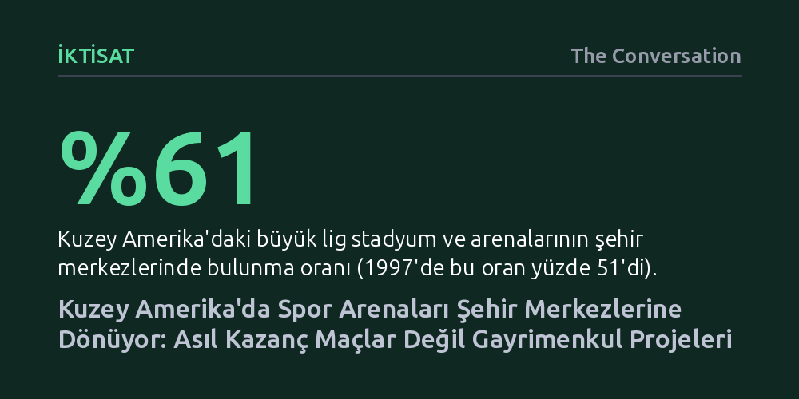

IKTISAT · The Conversation · 2026-10-26
Kuzey Amerika'da büyük lig stadyumlarının şehir merkezlerindeki payı yüzde 61'e yükselirken, bu yönelişin arkasında spor müsabakalarından ziyade lig gelir paylaşımına tabi olmayan devasa gayrimenkul projeleri yatıyor. Ancak bu dönüşüm, merkezleri canlandırırken dar gelirlileri kamusal alandan dışlama riski taşıyor.
Modern spor arenalarının artık yalnızca maç izlenen mekanlar değil, kent merkezlerini dönüştüren ve lig kurallarını baypas eden karlı birer gayrimenkul geliştirme aracına dönüştüğünü gösteriyor.

20. yüzyılın ortalarında, özellikle 1950 ve 1960'larda Kuzey Amerika kentlerinde yaşanan yoğun banliyöleşme dalgası, spor tesislerini de şehir merkezlerinden kopararak çevre otoyol kenarlarına ve geniş otoparklı banliyö alanlarına taşımıştı. Ancak 1990'ların sonundan itibaren bu yönelim tersine dönmeye başladı. 21. yüzyılın ilk çeyreğinde ivme kazanan bu süreç, stadyum ve arenaları yeniden kent merkezlerinin kalbine yerleştiriyor. 1997 yılında NFL, MLB, NBA ve NHL stadyumlarının yüzde 51'i şehir merkezlerindeyken, güncel veriler bu oranın yüzde 61'e çıktığını gösteriyor.
Şehir merkezine dönüş tercihi özellikle kapalı salon sporlarında çok daha belirgin. Bugün NBA takımlarının yüzde 80'i, NHL takımlarının ise yüzde 72'si maçlarına kent merkezlerindeki arenalarda ev sahipliği yapıyor. Şehir plancıları açısından bu tercih oldukça mantıklı bir zemine oturuyor: Merkezler daha zengin toplu taşıma alternatifleri sunuyor, otomobil bağımlılığını ve maç günlerinde oluşan trafik tıkanıklığını hafifletiyor. Ayrıca iş yerleri, konutlar, oteller ve restoranlarla çevrili bir merkez, taraftarların tesislere yürüyerek veya bisikletle ulaşmasını kolaylaştırıyor.
Stadyumların merkeze taşınması sadece ulaşım ve planlama hedefleriyle açıklanamaz; takım sahipleri için de devasa bir ticari getiri barındırıyor. Şehir merkezindeki tesisler banliyölere kıyasla daha fazla seyirci çekerek bilet, ticari ürün, yiyecek ve içecek satışlarını artırıyor. Ancak kulüp sahiplerinin asıl ilgisini çeken dinamik, stadyum kapılarının dışında kalan alanda yatıyor: komşu parsellerdeki gayrimenkul geliştirme fırsatları.
Amerikan profesyonel spor liglerinde yayın hakları, bilet satışları ve lisanslı ürünlerden elde edilen gelirler, rekabet dengesini korumak amacıyla lig genelindeki ortak gelir paylaşımı anlaşmalarına tabidir. Oysa gayrimenkul ve arsa geliştirme projelerinden sağlanan kazançlar bu paylaşım kurallarının tamamen dışındadır. Bu nedenle birçok mülkiyet grubu için yeni bir stadyum ya da arena inşa etmek sadece "iştah açıcı bir meze", asıl "ana yemek" ise tesisin etrafındaki konut, otel, ofis ve perakende alanlarını kapsayan devasa emlak operasyonudur. Takım sahipleri bu yolla lig havuzuna sokmak zorunda kalmadıkları yepyeni ve bağımsız bir gelir akışı yaratmaktadır.
1990'lı yıllarda Baltimore'daki Camden Yards ve Cleveland'daki Gateway projeleriyle hayat bulan "spor odaklı karma kullanımlı bölgeler", stadyumları kent dokusuna entegre ederek kentsel çöküntüyü tersine çevirmeyi hedefleyen yenilikçi modeller olarak alkışlanmıştı. On yıllar boyunca banliyöleşmenin getirdiği sermaye kaçışı ve ihmalle mücadele eden kent merkezleri için bu tesisler, haftada birkaç gün binlerce insanı merkeze çeken kritik bir kitle mıknatısı olarak görüldü.
Aradan geçen otuz yılda bu model tüm Kuzey Amerika'ya yayıldı. 2025 yılı sonu itibarıyla yalnızca ABD ve Kanada'da büyük lig tesislerini merkezine alan tam 37 yeni karma kullanım bölgesinin planlandığı ya da teklif edildiği görülüyor. Çağdaş spor tesisleri artık yalnızca taraftarların takımlarının mücadelesini izlemek için toplandığı mekanlar olmaktan çıkmış, kent merkezlerinin fiziksel çehresini ve işlevini belirleyen başlıca kentsel kalkınma motorları haline gelmiştir.
Arenaların kent merkezlerini canlandırma aracı olarak kullanılması masum ve herkese kazandıran bir formül değil. Bu devasa projeler kent merkezlerinin fiziksel ve sosyal karakterini dönüştürürken, kamusal alanın kimler tarafından kullanılabileceğine dair ciddi eşitsizlikler doğuruyor. Çoğu zaman lüks tüketim odaklı eğlence merkezlerine dönüşen bu bölgeler, yerel toplulukların ve düşük gelirli sakinlerin aleyhine işliyor.
Bunun en somut örneklerinden biri Kanada'da Edmonton Oilers takımının evi olan Rogers Place ve çevresindeki ICE District projesinde yaşandı. Bu devasa spor ve eğlence bölgesi hayata geçirilirken bölgedeki sosyal konutlar ve mahalle merkezleri yıkıldı; yıllar içinde bu mekanlarda yeşeren toplumsal bağlar ciddi biçimde zedelendi. Dolayısıyla kent merkezleri profesyonel spor yatırımlarını çekmeye devam ederken, bu projelerin merkezleri yalnızca ayrıcalıklı bir kesimin tüketim alanı haline getirmemesi, kamusal yaşamı herkes için kapsayıcı ve erişilebilir kılması hayati önem taşıyor.